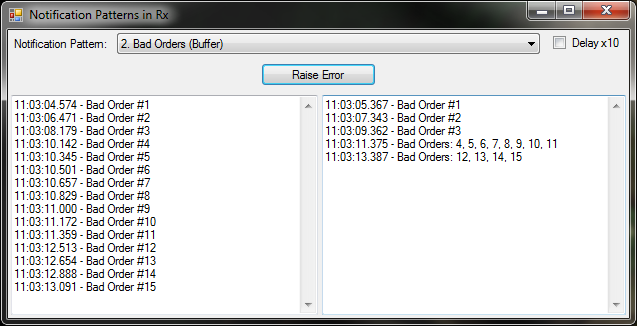

So now that we have the preamble of “What is Rx” and “Creating a Stream” out of the way, we can concentrate on a real world example. As with all our examples, when we have a high volume of errors occurring we don’t want to spam people. Despite our desire to avoid spam, we also don’t want to lose any data. We want to make sure that details about each exception are sent out. Therefore each email sent may include details about several exceptions.
In the example program, the Bad Orders example illustrates this Notification Pattern. If errors occur infrequently (click the button slowly) the notifications go out at the same as they come in. If a burst of errors occur they are grouped in to a single notification message. The notification message includes details about every exception that occurred.

Here is the code [GitHub] to implement this Notification Pattern:
protected override IDisposable Subscribe()
{
_exceptionStream = new Subject<BadOrderException>();
return _exceptionStream
.Do(OnRawMessage)
.Buffer(TimeSpanFactory.FromSeconds(2))
.Where(g => g.Any())
.ObserveOn(this)
.Subscribe(g => OnNotificationMessage(BadOrderMessage(g)));
}
private static string BadOrderMessage(IList<BadOrderException> exceptions)
{
if (exceptions.Count() == 1)
return exceptions.Single().Message;
return "Bad Orders: "
+ string.Join(", ", exceptions.Select(ex => ex.OrderNumber.ToString()).ToArray());
}
Our chain of methods contains all the elements from our previous example. First we call the Do method to report the exception to the raw message TextBox on the left of the main form. Finally we call the ObserveOn and Subscribe methods to report the final message to the notification TextBox on the right.
The manipulation we are doing is primarily with the Buffer method. This Rx method groups the Exception data in time boxes. The interval I pass in, i.e. the time box size, is 2 seconds.
The Buffer method takes in IObservable<BadOrderException> as
the input, but the output is an
IObservable<IList<BadOrderException>>. In
other words, an Exception goes in and a List of Exceptions comes
out; i.e. the exceptions are grouped. All the Exceptions that
occur in that time box are included in the group.
Once the Buffer method is called it will produce data on the
output stream even if no data is coming in. The output in this
case would be an empty list every 2 seconds. To filter these out I
add a quick Where(g => g.Any()) call to the
function chain. That forces the empty lists to be ignored. If you
wanted a heartbeat notification that states “over the last 2
seconds no bad orders were received and all is well”, leave this
Where call out.
The final action is simply to format the notification message. This formatting is done with the BadOrderMessage function. It transforms the list of bad order exceptions into a single string. It simply reports the single error message if there is only one, or a comma separated list of bad order numbers if there is more than one.
That’s all there is to the Lossless Notification Pattern. On to the next pattern, Unexpected Errors.